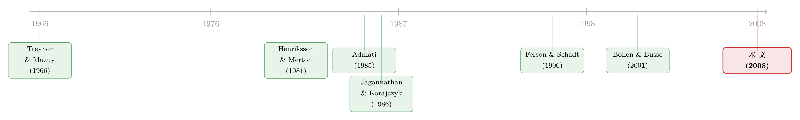

会动的 beta：基金经理的「择时本事」，是真的，还是统计模型替他造出来的？
本文读的是 Mamaysky, Spiegel & Zhang (2008, Review of Financial Studies)：当我们用一个会随时间「呼吸」的卡尔曼滤波 (Kalman filter) 模型去追踪基金的 alpha 和 beta，而不是用静态的 OLS 去硬套，关于「基金经理到底有没有市场择时能力」这个老问题，答案会发生反转——在月度数据里，静态择时模型几乎全是「狼来了」（假阳性率高达 14%–17%），卡尔曼滤波则把假阳性压回了该有的水平（3%），并且在这之上，它真的捞出了一批（也许高达 20%）看起来有择时本事的基金。
1 一个让人不安的问题
先讲一件听起来有点荒谬、但每天都在发生的事。
你想检验一位基金经理有没有「市场择时 (market timing)」的本事——所谓择时，就是市场要涨的时候他提前加仓（把 beta 调高），市场要跌的时候他提前减仓（把 beta 调低）。这是投资者花高价请主动管理的核心理由之一。检验的办法看上去再标准不过：拿基金的月度收益，对市场超额收益做一个回归，再加上一个能捕捉「凸性」的择时项。Treynor 和 Mazuy (1966)（下称 TM）加的是一个平方项 \(\gamma r_{mt}^2\)，Henriksson 和 Merton (1981)（下称 HM）加的是一个分段项 \(\gamma\, r_{mt} I\{r_{mt}>0\}\)。\(\gamma\) 显著为正，就说明这位经理「会看天」。
问题来了。把这套模型拿去跑一批本来就不可能有择时能力的东西——比如 CRSP 的市值十分位组合（size deciles），它们只是机械地按市值分档、被动持有，谈何择时——结果呢？在月度数据里，TM 模型有 17% 的概率报告出一个显著的择时系数，HM 是 14%。
这就尴尬了。所谓「在 5% 的显著性水平上显著」，本来的含义是：在原假设为真（没有择时能力）时，模型只会有 5% 的概率误报。可这里的误报率是 14%–17%，整整高出三倍。换句话说，一个标准的统计模型，在面对一堆「死」的被动组合时，三次里有一次会信誓旦旦地告诉你「这家伙会择时」。
这意味着，当 TM 或 HM 在真实基金里找到一个显著的择时系数时，你根本分不清那到底是基金经理的本事，还是模型自己「制造」出来的幻觉。一把会随机走火的尺子，量出来的数你敢信吗？
于是这篇文章真正要回答的，并不是「基金经理会不会择时」这个老问题，而是一个更底层、也更要命的问题：
有没有可能造出一个模型，它既能检测择时能力，又不会以高得离谱的概率「狼来了」？
2 病根在哪：beta 本来就不该是个常数
要治病，先得找到病根。这篇文章的诊断非常清楚：OLS 的「常数因子载荷」假设，对主动管理的组合而言几乎必然是错的。
为什么？作者从一个极简的例子讲起。假设一只基金只持有 A、B 两只股票，每只股票自己都老老实实满足一个常数 beta 的单因子模型（方程 1）：
$$r_{it} - r_{ft} = \alpha_i + \beta_i'(r_{mt} - r_{ft}) + \varepsilon_{it}$$
组合的收益就是两只股票的加权平均（方程 2）：
$$r_{Pt} = w_{A,t-1}\, r_A + w_{B,t-1}\, r_B$$
接着，一个自然的问题是：组合的 beta 是常数吗？答案是——几乎肯定不是。哪怕基金经理什么都不做、完全不交易，只要 A 和 B 在 \(t\) 期的收益不一样，到了 \(t+1\) 期，两只股票在组合里的权重 \(w\) 就被「行情」自动改变了（涨得多的那只占比变大）。权重一变，组合的 beta 自然就变了。
这是个很深刻的观察：「权重会动」是组合的天性，根本不需要经理主动择时。而一旦经理真的在主动调仓——尤其是为了择时而调——beta 的时变就更剧烈。所以，用一个常数 beta 的线性模型去拟合一只基金，从一开始就是模型设定错误 (misspecification)。设定错了的模型，产出怪异结果（比如过高的假阳性）也就不奇怪了。
这一点其实是一条更宽的暗线：资产定价里大量「常系数」的实证范式，对会动的载荷都是有偏的。关于时变 beta 被长期低估这件事，可参见《时变的 beta，被低估了二十年的风险》。
那把固定窗口的滚动 OLS（rolling regression）拿来不就行了？也不行。滚动回归是用一段历史窗口去「平均」beta，它永远滞后于基金当下的真实暴露——当经理刚刚把仓位调高时，滚动 OLS 还停留在过去那段窗口的平均水平上。我们需要的，是一个能实时追踪基金当前载荷的模型。
3 真正关键的一步：把「看不见的信号」写进模型
到这里，作者埋下了全文最漂亮的一步棋。
如果一位经理真有本事跑赢市场，他一定是收到了某种外部计量经济学家看不见的私有信号 (private signal)——可能是对某个行业的判断，可能是对宏观拐点的嗅觉。Ferson 和 Schadt (1996)（下称 FS）的经典做法，是用一组可观测的宏观变量（如国债利率、股息率）去近似这个信号，再在评价业绩时把这部分相关性扣掉。FS 的贡献巨大，但它的软肋也很明显：经理用来调仓的信息，未必都写在那几个宏观变量里。
这篇文章的野心更大：直接为那个看不见的信号建模，让数据自己把它估出来。
具体地，设 \(F_t\) 为基金赖以交易的信号（标准化为均值零），假设它服从一个 AR(1) 过程（方程 5）：
$$F_t = \upsilon F_{t-1} + \eta_t$$
其中 \(\upsilon \in [0,1)\) 衡量信号的持续性，\(\eta_t\) 是 i.i.d. 的扰动。这个 \(F_t\) 是未观测的——它就是卡尔曼滤波里的「状态 (state)」。
然后是两个核心假设，把信号 \(F_t\) 同时接到「持仓」和「未来收益」这两端：
第一，信号改变持仓权重（方程 6）：
$$w_{it} = w_i + l_i F_t$$
\(w_i\) 是某只股票在策略中的稳态权重，\(l_i\) 是它在共同未观测因子 \(F_t\) 上的载荷——信号一来，权重就被推离稳态。
第二，信号预测个股的超额收益（方程 7）：
$$\alpha_{it} = \alpha_i F_{t-1}$$
如果信号有价值，那么 \(\alpha_i \neq 0\)；如果信号毫无价值，所有 \(\alpha_i\) 都等于零，而且稳态 alpha 天然为零。
这一步的精妙之处在于：计量经济学家自始至终不需要知道基金的真实持仓权重。 只要给权重的动态一个合理的设定，把它代入组合收益的恒等式，那些无法观测的个股权重、alpha、beta 就会被「打包」成几个可估计的组合层面参数。这正是它相对于需要持仓数据的 Grinblatt 和 Titman (1994) 一类方法的关键优势。
4 模型推导：从恒等式到可估计的状态空间
这一节我们把推导一步步走完，看看那个「打包」是怎么发生的。读起来有点数学，但每一步的直觉都不难。
第一步：组合收益是个时变系数模型。 把方程 (1) 代入组合权重的恒等式，得到（方程 3、4）：
$$r_{Pt} - r_{ft} = \alpha_{Pt} + \beta_{Pt}'(r_{mt} - r_{ft}) + \varepsilon_{Pt}$$
其中
$$\alpha_{Pt} \equiv w_{t-1}'\alpha_t - k_t, \qquad \beta_{Pt} \equiv \beta w_{t-1}, \qquad \varepsilon_{Pt} \equiv w_{t-1}'\varepsilon_t$$
这里 \(k_t\) 是交易成本（为了数学上的可处理性，假定与管理规模成比例）。这个式子说明：在「净财富满足跨期预算约束」与「个股 beta 为常数」这两个假设下，组合收益一定是一个系数时变、且扰动项异方差的线性因子模型。这恰恰证明了第 2 节的诊断——常系数模型是错的。
第二步：把信号代进去，alpha 和 beta 各自分解。 用方程 (6)、(7) 的设定，可以把组合的 alpha 和 beta 写成信号 \(F\) 的多项式（方程 8、9）：
$$\alpha_{Pt} = \alpha_P F_{t-1} + b_P F_{t-1}^2 - k_t$$
$$\beta_{Pt} = \beta_P + c_P F_{t-1}$$
这里每个参数都有干净的经济含义。\(\alpha_P\) 是线性项，衡量基金策略与个股瞬时 alpha 的相关程度；由于 \(F\) 可正可负，\(\alpha_P \neq 0\) 并不代表基金整体跑赢或跑输。真正代表择时本事的，是那个二次项 \(b_P\)——它衡量基金「在发现一批正 alpha 股票时系统性地做多、发现负 alpha 时系统性地做空」的能力。作者给了一个很妙的直觉：
\(b_P\) 可以理解为基金的证券权重 \(w_t\) 与个股 alpha 之间的协方差。能在好股票上加仓、坏股票上减仓，这个协方差就是正的——这正是「选股/择时」本事的数学化身。
\(\beta_{Pt}\) 这边同理：\(\beta_P\) 是稳态 beta，\(c_P\) 衡量 beta 随信号 \(F\) 的摆动幅度——这正是市场择时的载荷。
第三步：合并成观测方程。 把 (8)、(9) 代回 (3)，消去 \(\alpha_{Pt}\) 和 \(\beta_{Pt}\)，得到全文计量分析的核心——观测方程（方程 10）：
配上状态方程 \(F_t = \upsilon F_{t-1} + \eta_t\)（方程 5），这就构成了一个完整的状态空间系统。
第四步：处理那个讨厌的 \(F_{t-1}^2\)。 注意观测方程里有一个 \(F_{t-1}^2\) 项，这让 \(r_{Pt}-r_{ft}\) 的条件方差不再独立于 \(F_{t-1}\) 的估计值，标准卡尔曼滤波会失效。标准的补救是做一阶泰勒展开（extended Kalman filter，扩展卡尔曼滤波），围绕 \(F_{t-1}\) 的条件期望线性化（方程 11）：
$$F_{t-1}^2 \approx 2\,E[F_{t-1}\,|\,r_{P,t-1}-r_{f,t-1},\,F_{t-2}]\,F_{t-1} - E[F_{t-1}\,|\,r_{P,t-1}-r_{f,t-1},\,F_{t-2}]^2$$
再补上扰动项的条件方差（方程 12，来自各个独立的 \(\varepsilon_{it}\)）：
$$\mathrm{var}_{t-1}(\varepsilon_{Pt}) = \sum_{i=1}^{I} w_{i,t-1}^2 \,\mathrm{var}_{t-1}(\varepsilon_{it})$$
整个系统通过极大化对数似然来估计。这个框架的弹性很大：令 \(\eta_t\) 方差为零、或令 \(\upsilon = 0\)，它就退化回 FS 的设定——FS 是它的一个特例。但关键在于，它不需要这些限制也能估出来。
还有一个常被忽略、却很重要的时点约定 (timing convention)：决定 \(t\) 期收益的 alpha 和 beta，在 \(t-1\) 期就已经确定。因此，组合 \(t\) 期 beta 与 \(t\) 期市场收益之间的任何协方差，都意味着经理在 \(t-1\) 期做出了成功预判 \(t\) 期市场的决策——这就是择时的操作化定义。
5 反转：同样的数据，月度卡尔曼为什么赢了
模型搭好了，真正的考验是：它能不能治好那个「假阳性」的病？
作者把模型拿去跑那批本不该有择时能力的 CRSP 市值十分位组合——一个好模型，应该恰好以临界水平（5%）报出假阳性。结果分两层：
先说一个反直觉的坏消息：日度数据下，卡尔曼滤波同样很糟。 用日度数据、5% 临界值，单因子卡尔曼模型的假阳性率高达 58%，四因子模型 30%——糟得和 TM、HM 不相上下。
但月度数据下，反转出现了。 在月度数据里，单因子卡尔曼模型的假阳性率掉到了 3%，四因子模型 6%——这两个数字都和「一个设定正确的统计模型该有的水平」吻合。作为对照，同样月度数据，TM 是 17%、HM 是 14%。
为什么日度和月度差这么多？作者把矛头指向了微观结构噪声 (microstructure issues)——买卖价差跳动 (bid–ask bounce)、陈旧定价 (stale pricing) 等会在日度数据里制造虚假的序列相关，卡尔曼滤波误把这种序列相关当成了「择时」。这给整个用日度数据研究基金业绩的做法泼了一盆冷水：日度数据看似提供了更多统计功效（这正是 Bollen 和 Busse 2001 用日度数据找到择时证据的依据），但这份「功效」里混进了微观结构的脏东西。
一个很漂亮的旁证：作者发现，当前期择时系数越大时，滞后收益对应的择时系数就越负、且数量级大致相等、符号相反。在没有微观结构问题时，滞后收益本应与当期收益无关、系数应为零；可一旦微观结构制造了假阳性，滞后项就会站出来「对冲」掉它。一正一负、大小相当——这正是「假阳性」的指纹。
于是关键结论浮现：在干净的月度数据上，卡尔曼滤波不再「狼来了」。而正因为它不再乱报，它报出来的「真」就值得信了——在月度数据里，它捞出了一批（也许高达 20%）真正具备市场择时能力的基金。这恰恰与 Bollen 和 Busse (2001)（下称 BB）形成对照：BB 用 TM、HM 在月度数据里找不到任何择时能力。差别就在于，卡尔曼滤波能实时贴合基金当下的市场载荷，而滚动 OLS 做不到。
注意这里的微妙之处：BB 认为月度数据「没功效」所以找不到择时，于是转向日度数据。这篇文章反过来说——不是月度没功效，是 OLS 模型设定错了；换上对的模型，月度数据里的择时本来就在那儿。
6 还不够：一个「全因子一起考」的 Omnibus 检验
故事到这里其实可以收尾了，但作者又往前推了一步，处理一个更隐蔽的陷阱。
Jagannathan 和 Korajczyk (1986) 早就指出：TM、HM 的估计往往在择时参数的误差和alpha 的误差之间「拆东墙补西墙」——高择时估计常常伴随低 alpha 估计。这意味着，一次只检验一个因子的预测力，可能漏掉另一个因子里的问题；反过来，一个模型整体预测力不错，底层的因子估计却可能各自都很可疑。
于是作者设计了一个 omnibus 检验：不做常规的分组排序，而是给每只基金构造一个「零 alpha、零 beta」组合——做多该基金、按各模型的预测做空对应因子。一个理想的模型，应当让这些组合的样本外因子载荷集中在零附近。
结果颇具杀伤力：TM、HM、以及四因子卡尔曼模型都没通过这个检验。有人可能会猜，OLS 的 HM、TM 如果只在低换手率基金上估计会不会好些？答案是：也不行。唯独单因子卡尔曼模型通过了——它产生的样本外组合统计量，无论对全样本还是各换手率三分位组，都落在 95% 的自举 (bootstrap) 置信区间内、覆盖了零。这说明单因子卡尔曼不会凭空造出虚假参数，而是真的提供了关于基金择时能力与未来载荷的有用信号。
最后，作者还检验了「加入 FS 那套宏观条件信息能否提升拟合」。总体看，条件信息没有显著改善 \(R^2\)；但对部分基金有效——具有显著参数的基金数量略多于纯随机能产生的数量。经济含义很务实：有些基金确实在用这里检验的宏观信息（滞后国债利率、市场股息率）调仓，但很多基金并不。对于后者，卡尔曼滤波能通过估计那个未观测信号 \(F\)，捕捉到它们 alpha 和 beta 里的时变——这正是「未观测因子」建模相对 FS「可观测因子」建模的价值所在。
7 文献脉络
把这条线索捋一遍，能看清这篇文章站在哪里。
最早，市场择时的检验工具来自 Treynor 和 Mazuy (1966) 的平方项，与 Henriksson 和 Merton (1981) 的分段项——这是「OLS + 一个凸性项」范式的源头。接着，一个自然的问题是：这些工具可靠吗？Jagannathan 和 Korajczyk (1986) 给出了第一记警钟——这些模型会在 alpha 和择时参数之间相互转嫁误差，并产生过高的假阳性。
然后，问题转向「如何把经理的动态策略纳入评价」。Admati (1985) 的非对称信息一般均衡模型提供了理论地基——经理凭私有信号交易。Ferson 和 Schadt (1996) 把这套思想实证化，用可观测的宏观变量去条件化 beta，开创了条件业绩评价。Bollen 和 Busse (2001) 则把战场推向数据频率，用日度数据找到了择时证据，并断言月度数据「功效不足」。

这篇文章正落在这几条线的交汇处：它继承 FS 的「条件化」思想，却把视角从可观测因子转向不可观测因子；它用卡尔曼滤波解决了 TM/HM 的假阳性病；它又对 BB 的「日度优于月度」结论做了釜底抽薪式的反驳——不是月度没功效，是模型设定错了。
8 评论与延伸（Q&A + 研究方向）
(a) 几个可能的疑问
Q：卡尔曼滤波和滚动 OLS 都能得到「时变 beta」，区别到底在哪？
区别在「实时」二字。滚动 OLS 是用一段历史窗口平均出 beta，结构上永远滞后于基金当下的真实暴露；当经理刚把仓位调高，滚动估计还停在旧窗口的均值上。卡尔曼滤波是递归的状态估计，用 \(t-1\) 期的全部信息预测 \(t\) 期的载荷，能贴合「当下」。正因如此，它能在 \(t\) 期 beta 与 \(t\) 期市场收益之间识别出那个代表择时的协方差。
Q：日度数据明明信息更多，为什么反而更差？
信息更多不等于信号更干净。日度数据里混入了买卖价差跳动、陈旧定价等微观结构噪声，它们制造虚假的序列相关，被卡尔曼滤波误读为「beta 在随市场动」即择时。文中那个「当期择时系数为正、滞后系数等量为负」的发现，就是这种虚假信号的指纹。月度采样把这些噪声平滑掉了，信号才显出来。
Q：所谓「20% 的基金有择时能力」，会不会只是换了个模型、换出来的新一批假阳性？
这正是 omnibus 检验要堵的漏洞。单因子卡尔曼在那批本不该有能力的市值组合上，假阳性率仅 3%，与理论临界值一致；而且它的样本外「零 alpha 零 beta」组合落在自举置信区间内、覆盖零。这两道关卡都过了，才让那 20% 显得可信。相比之下，四因子卡尔曼没通过 omnibus，说明因子越多未必越好。
Q：模型假设「个股 beta 是常数、是基金权重在动」，可现实里个股 beta 本身也在变，这会不会推翻结论？
作者明确讨论过（脚注 8、9）。即便个股载荷也时变，也不会定性地改变结论——如果有影响，那只会强化「必须为基金本身的时变载荷建模」这一主张。反过来，技术上也可能是个股 beta 在变、而经理通过交易维持组合载荷恒定；但文中的实证证据显示，高换手率基金的 beta 时变也更大，与「权重在动」的设定一致。
Q：这跟 Ferson-Schadt (1996) 到底是什么关系，是替代还是补充？
是包含关系。令信号扰动方差为零或持续性 \(\upsilon=0\)，这个模型就退化回 FS。所以 FS 是它的一个特例。实证上二者也互补：有些基金确实在用可观测宏观变量（滞后国债利率、股息率）调仓，FS 抓得住；但很多基金不是，这部分时变只能靠卡尔曼对未观测信号的估计来捕捉。
Q：那个二次项 \(b_P\) 凭什么被解读为「本事」而不是运气？
因为 \(b_P\) 在数学上等于基金证券权重 \(w_t\) 与个股 alpha 的协方差。系统性地在好股票上加仓、坏股票上减仓，这个协方差才会持续为正。它是「偶尔跑赢」的充分而非必要条件；更弱的必要条件是 alpha 持续且偶尔为正（即 \(\alpha_P \neq 0\) 且 \(\upsilon>0\)）。把「持续性」纳入，正是为了把本事和单期的运气分开。
(b) 几个可能的研究问题与提案
1. 把这套「未观测信号」框架搬到公司债基金。 【经济故事】公司债基金经理的择时，既包括久期（利率 beta）择时，也包括信用利差择时；而公司债的「权重随行情漂移」问题比股票更严重，因为价格冲击大、再平衡慢。一个会动的 alpha/beta 模型在这里应当更有用武之地。 【可行性】中。月度基金收益可得，多因子（利率、信用、流动性）也成熟；难点在于公司债的微观结构噪声（成交稀疏、报价陈旧）可能比股票还脏，需要先把流动性因子处理干净——这恰好与《把「成交价」从「成交量」里解放出来——重新丈量公司债的流动性》关心的问题相接。
2. 用未观测因子 \(F\) 反推「经理在跟踪什么宏观信号」。 【经济故事】文中发现条件信息总体不改善拟合，但部分基金显著——说明不同基金跟踪不同的信号。能否把估出的 \(\hat F_t\) 时间序列，事后投影到一个大的宏观/另类数据面板上，去识别「这只基金的隐性信号最像什么」？这等于把黑箱信号「显影」。 【可行性】中。\(\hat F_t\) 可由卡尔曼滤波直接输出，投影只是一个事后回归；识别上的诚实之处在于，这只能给出相关性而非因果，且 \(\hat F_t\) 本身是估计量、带测量误差。
3. 外资持有比例与基金 beta 时变的关系。 【经济故事】如果一只基金的持有人结构里外资占比高，赎回行为更具周期性，可能逼迫经理被动调整组合载荷（被动的「伪择时」）。卡尔曼估出的 \(c_P\)（beta 时变载荷）能否被持有人结构解释？ 【可行性】中偏低。需要把基金层面的持有人结构数据与收益序列匹配，识别上要把「被动赎回驱动的载荷漂移」和「主动择时」分开——这很难，可能需要外生的赎回冲击作工具。
4. 把 omnibus 检验作为通用「模型体检」工具推广。 【经济故事】文中那个「构造零 alpha 零 beta 组合、看样本外载荷是否覆盖零」的 omnibus 思路，本质上是一个不依赖特定排序的模型设定检验，可用于任何宣称能预测因子载荷的模型（包括今天的机器学习因子模型）。 【可行性】高。方法本身只需模型的样本外预测 + 自举置信区间，数据门槛低；价值在于给「样本内 R² 漂亮、样本外却造假参数」的模型一记照妖镜。这与《一个「成功」的模型，为什么经不起逐年对账？》的精神一脉相承。
9 我的判断
这篇文章的真正贡献，不在于又一次回答「基金经理会不会择时」，而在于它把问题往前推了一层：先质问你的尺子，再去量东西。 它用一个干净的「死组合」实验，把 TM/HM 的高假阳性钉死在台面上，再用一个理论自洽（源自 Admati 1985）、计量可行（扩展卡尔曼）、且把 FS 收为特例的模型去替换它。最妙的是那个「滞后择时系数等量反号」的发现——它几乎是用模型自己的语言，给「假阳性」拍了张 X 光片。
但有几点值得保留。第一，对识别的担忧。 未观测信号 \(F_t\) 被设成 AR(1)，并通过方程 (6)、(7) 同时绑定持仓和收益，这套设定虽优雅，却也是把「择时」直接写进了模型结构里；模型说「这是择时」，多大程度上是数据说的、多大程度上是设定逼出来的，值得更多稳健性。第二，扩展卡尔曼的一阶泰勒近似在 \(F_{t-1}^2\) 上做线性化，当信号波动大时近似误差可能不可忽略，文中对这一近似精度的讨论略显单薄。第三，那个「也许高达 20%」的措辞本身就承认了估计的脆弱——它依赖 5% 临界值的选择，换个阈值数字会怎样，读者无从判断。
我最想看到的后续，是把这套框架放到一个有外生载荷冲击的环境里去验证——比如指数重构、强制赎回、或监管驱动的仓位调整——看卡尔曼估出的 beta 时变，是否真的对得上那些已知发生的载荷变化。若能在「真相已知」的场景里通过对账，这把尺子才算真正校准过。
参考文献
- Admati, A. (1985). A Noisy Rational Expectations Equilibrium for Multi-asset Securities Markets. Econometrica 53(3), 629–657.
- Bollen, N., and J. Busse. (2001). On the Timing Ability of Mutual Fund Managers. Journal of Finance 56(3), 1075–1094.
- Bollen, N., and J. Busse. (2005). Short-Term Persistence in Mutual Fund Performance. Review of Financial Studies 18(2), 569–597.
- Ferson, W., and R. Schadt. (1996). Measuring Fund Strategy and Performance in Changing Economic Conditions. Journal of Finance 51(2), 425–462.
- Grinblatt, M., and S. Titman. (1994). A Study of Monthly Mutual Fund Returns and Performance Evaluation Techniques. Journal of Financial and Quantitative Analysis 29(3), 419–444.
- Harvey, A. (1989). Forecasting, Structural Time Series Models and the Kalman Filter. Cambridge: Cambridge University Press.
- Henriksson, R. D., and R. C. Merton. (1981). On Market-timing and Investment Performance. II. Statistical Procedures for Evaluating Forecasting Skills. Journal of Business 54(4), 513–533.
- Jagannathan, R., and R. Korajczyk. (1986). Assessing the Market-timing Performance of Managed Portfolios. Journal of Business 59(2), 217–235.
- Treynor, J. L., and K. Mazuy. (1966). Can Mutual Funds Outguess the Market? Harvard Business Review 44, 131–136.